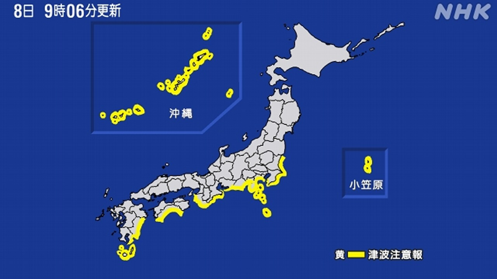

最新ニュース
1️⃣ フィリピンの近くの海で大きい地震 被害が出ている
日本の時間で、8日午前8時38分ごろ、フィリピンの近くの海で、大きい地震がありました。
マグニチュードは8.2でした。
フィリピン政府は、日本の時間の午後4時19分まで、津波警報を出しました。1m48cmの津波が来ました。
インドネシアには、75cmの津波が来ました。フィリピンのミンダナオ島では、多くの建物が倒れたり壊れたりしました。フィリピンの政府は、今までに19人が亡くなったと言っています。マルコス大統領は、避難する場所を急いで作るなどと言っています。
2️⃣ フィリピンで大きい地震 日本に津波注意報が出た

フィリピンの地震で日本の気象庁は、沖縄県から茨城県までの海岸に津波注意報を出しました。午後4時50分まで出しました。
日本では、宮崎県に30cm、和歌山県や小笠原諸島などに20cmの津波が来ました。
気象庁の人は、「このあとも、海で泳いだり釣りをしたりする人は、気をつけてください」と話しています。
3️⃣ 栃木県宇都宮市の町の中に熊が出た まだ見つかっていない
栃木県宇都宮市の町の中で「熊を見た」という人が多くなっています。
7日は、たくさんの人が行くところにあるカメラに、熊がうつっていました。
8日も朝、町の中などで熊を見た人がいました。宇都宮市などが熊をさがしていますが、見つかっていません。
市は8日、94の小学校や中学校を休みにしました。
そして「熊が家に入ってこないように、家のドアや窓をしっかりしめてください。熊を見たら近くの建物に逃げてください」と言っています。
4️⃣ アメリカとイランの対立 サッカーのワールドカップに影響
アメリカとイランの対立が、サッカーのワールドカップに影響しています。
ワールドカップはアメリカなどで試合があります。
イランは試合の前の練習をアメリカでする予定でした。しかしアメリカと対立しているため、練習の場所をメキシコに変えました。
イランの選手は7日、メキシコに着きました。イランの国の旗を振って選手たちを迎える人もいました。
イランの最初の試合は、15日にアメリカのロサンゼルスであります。
アメリカはイランの選手に、試合の日だけアメリカにいてもいいというビザを出しました。
イランは、試合の日だけでは短かすぎると言っています。
- 〜ごろ
- 〜がある / 〜がいる
- 〜まで
- 〜たり〜たりする
- 〜ている / 〜でいる
- 〜までに
- 〜など
- 〜から
- 〜から〜まで
- 〜や〜など
- 〜てください / 〜でください
- 〜後 / 〜あと
- 〜という
- 〜中
- 〜ところ
- 〜ように
- 〜予定
- 〜ため
- 〜ても / 〜でも
- 〜だけ
- 〜てもいい
- 〜すぎる
vebaev.github.io
Generated: 2026-06-08 14:09:07 UTC